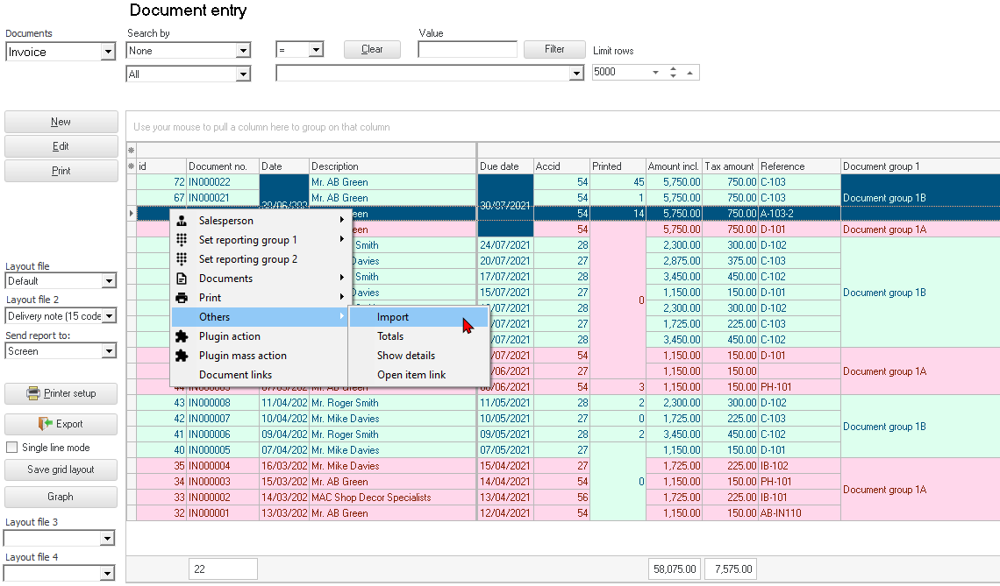
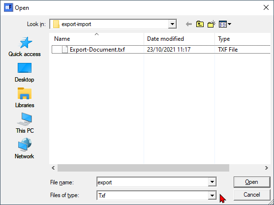
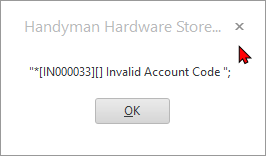
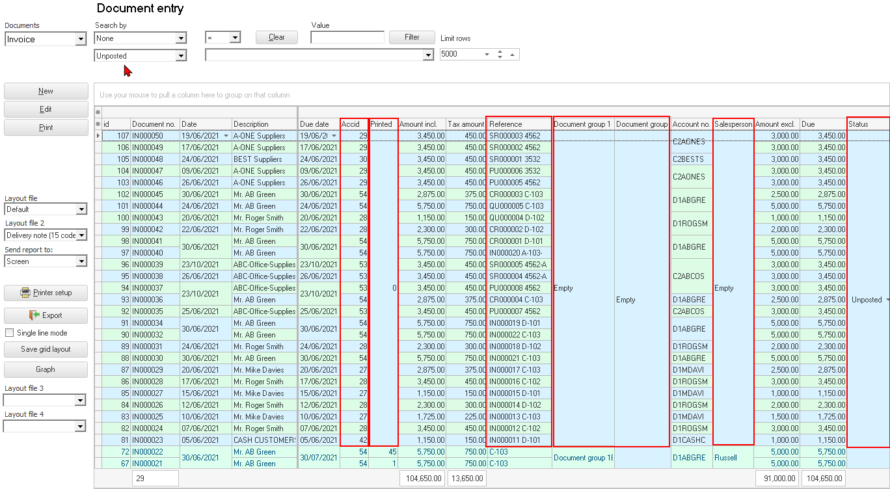

Context menu - Others - Import
This option allows you to import documents from a valid exported txf file (exported in the Export - Documents option on the Setup ribbon).
|
Document Export / Import plugin - Manual - Shop - Licence: Once-off The Document Export / Import plugin allows you to export sales documents (invoices, credit notes and quotes) and purchase documents (purchases, supplier returns and orders) to a TurboCASH Exchange (*.txf) or a Comma Separated Value (*.csv) file format. You may then select an exported documents file (context menu Others → Export) and import the exported file in the (context menu Others → Import) options in the documents grid. |
To import documents from a valid txf file:
- On the Default ribbon, select Documents (Documents list screen), select the Document type.
- Right-click and select the Others → Import option on the context-menu.

- The "Open" screen is displayed:

- Select a valid "TurboCASH Exchange file (*.txf)" file and click Open.
|
|
The valid "TurboCASH Exchange file (*.txf)" file is generated in the Export - Documents option on the Setup ribbon. This will only include the documents on the dates selected to include in the export file. |

- On the "Debtor accounts" list screen, click on any of the OK, Close or Open buttons. The Documents will be imported.
|
|
If an invalid account code is included in the "TurboCASH Exchange file (*.txf)" file (generated in the Export - Documents option on the Setup ribbon), a message will be displayed:
 The document (listed on the message screen) will not be imported. |


|
|
"Reference" column, the source of the exported document Document number and the "Your reference" field of the original source document will be listed. The new document numbers will be generated numerically from the last document in the Set of Books. In this example, the last existing document number ends with IN000022 and the first document imported starts with IN000023. Comments of the original source document will also be imported. Document group 1 and Document group 2 - will not be imported. Salesperson - will not be imported. Status - All documents will be imported as unposted documents. Printed - All imported documents will be imported as unprinted. |

|
|
If there are any imported documents, that you do not wish to keep, go to the Default ribbon, and select Edit → Delete - Documents to delete the documents, if necessary. |